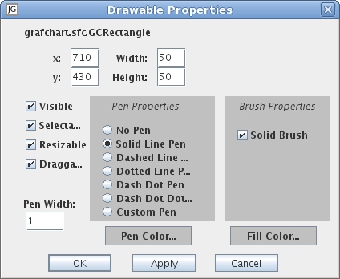

A rectangle object.
Common Methods
GUI Common Methods
remove()
Edit
Opens the common GUI object settings dialog.

x:
The x position of the object.
y:
The y position of the object.
Width:
The object's width.
Height:
The object's height.
Visible:
If checked the object is visible. (Default: Checked)
Hint: Invisible objects can still be seen in a Tree View.
Selectable:
If checked it is possible to select the object.
Hint: Not selectable object can still be selected in a Tree View.
(Default: Checked)
Resizable:
If checked it is possible to resize the object. (Default: Checked)
Draggable:
If checked it is possible to move the object. (Default: Checked)
Pen width:
Sets the pen width of the object's border. (Default: 1)
Pen Properties:
Pen Color:
Select the pen color. (Default: Black)
Brush Properties:
Fill Color:
Select the fill color. (Default: Gray (#CCCCCC))
Name
Opens an edit dialog for the name.